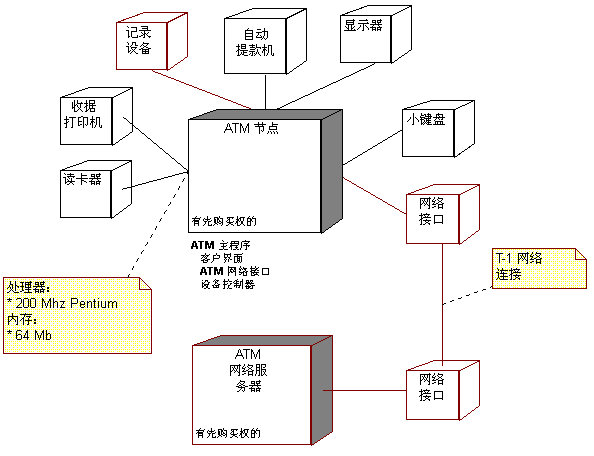

| 概念：部署视图 |
 |
|
关系
| 相关元素 |
|---|
主要描述
为理解在一组处理节点之间的系统物理分布提供基础，在分析和设计工作流程中使用称为部署视图的体系结构视图。部署视图（五个视图之一，请参阅下文）说明在系统中一组节点之间的处理分布，包括进程和线程的物理分布。在每次迭代期间优化部署视图。  部署视图显示系统中处理的物理分布。 还有其他四个视图：用例视图（在需求工作流程中处理）、逻辑视图、进程视图和实施视图；这些视图在分析与设计工作流程和实施工作流程中处理。 软件体系结构文档中记录了体系结构视图。可以添加不同的视图（例如安全视图）来说明软件体系结构的其他特定方面。 因此本质上，可以将体系结构视图看成所构建模型的抽象或简化，在该视图中通过将细节放在一边而使重要特征更加清晰。对于提高在系统开发过程中构建的任何模型的质量，体系结构是一种重要的方法。 |
© Copyright IBM Corp. 1987, 2006. All Rights Reserved. |